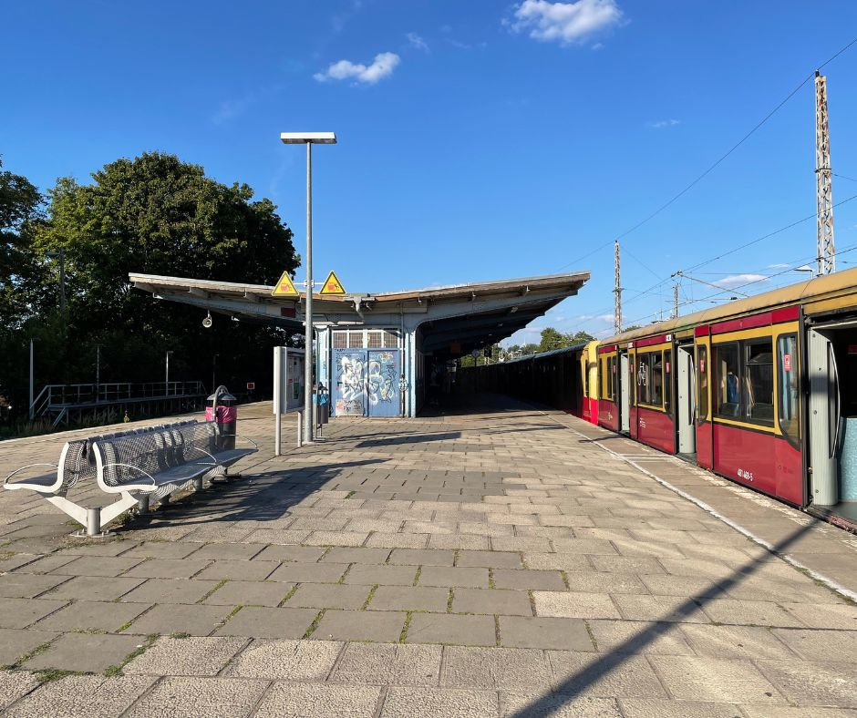

Skatepark Berlin Bernau - Germany
The Bernau Skatepark features a bowl, segmented into sections with and without coping, complimented by a roll-in. Additionally, it offers a street section equipped with a quarter-pipe and a bank. The skatepark was build by Populär Skateparks in 2017. During my visit to the skatepark last year, I unfortunately didn’t have my surfskate with me, so I’m unable to provide specific insights into the rideability of the bowl. However, the park was new at the time and I did observe the concrete was impressively smooth. Please note these observations were made in August 2022.
Image (c) by Pouplär Skateparks
📠Location
🗺️ Skatepark und Calisthenics-Gerüst Rehberge Bernau, Gottlieb-Daimler-Straße, 16321 Bernau bei Berlin, Germany
Suburb: Bernau
🔗 Google Maps: Skatepark Berlin Bernau
🚌 Public transport: Bus stop Bernau, W.-von-Siemens-Str.
🌠Social Media
- 📸 Instagram Page Skatepark Bernau
- 🥠YouTube Shorts: Video by me filming the bowl
- 🕸️ Populär Skateparks Bernau Berlin
🥣 Bowl
The bowl at the park features both areas with coping and those without. This unique design makes it an ideal spot to perfect your roll-ins.
🥠YouTube Shorts: Video by me filming the bowl

🛹 Street Section
When I visited the skatepark, I didn’t particularly focus on the street section since my interest leans more towards bowl riding. However, for those interested, the park does include a quarter-pipe and a bank.
🌲 Area & Necessities
The skatepark, situated within a more industrial setting, emits a relaxed and pleasant vibe. Conveniently nearby, there’s a Netto supermarket, a beverage shop, and a petrol station to cater to your needs. I must note that I’m unsure if restroom facilities are available within the skatepark.

When I visited in August 2022, public bus service was not available to the skatepark, so I resorted to a cab. However, recent data from Google Maps suggests the location is now accessible via bus number 894.
🚂 S-Bahn Station Bernau
I initially reached the location by the S2 train to the S-Bahn station in Bernau. From there, it’s now feasible to catch the bus to the skatepark.

The area surrounding the S-Bahn station is quite pleasant. As a personal touch, I treated myself to some pizza from Domino’s on my journey home.